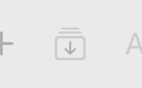
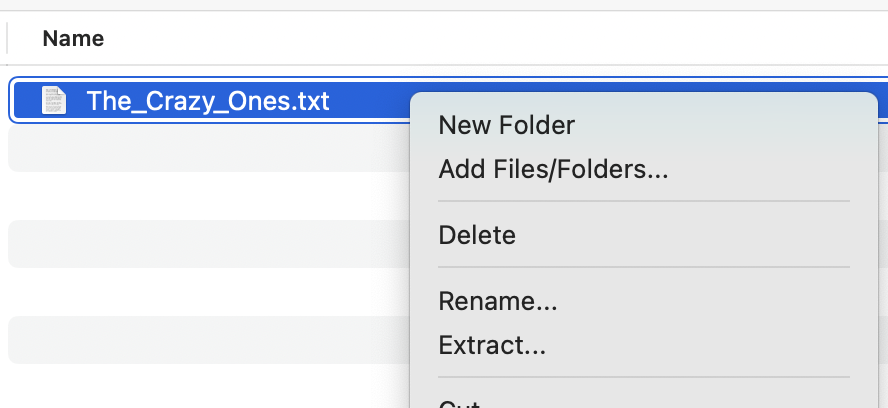
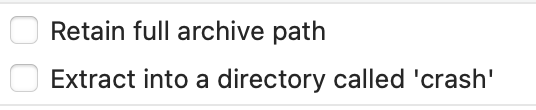

There are several ways you can extract files and folders from an archive that has been created/opened in Arkyve, which you can learn the details of, below.
Extracting an entire archive
When you want to extract all of the files and folders from an archive, choose the "Extract All" item from the File menu. A file requester will then be displayed for you to choose the location you would like to extract the archive's contents to.
Extracting one/several files or folders from an archive
There are several ways you can use to extract one or more items from an archive.
1. Drag the files/folders you want to extract, from Arkyve to another application (e.g. Finder)
2. Select one or more files/folders in the archive and click the Extract button on the toolbar

3. Select one or more files/folders in the archive and right click on one, then choose Extract from the context menu

Options when extracting archive contents
If you are presented with a file requester when extracting, you can affect the behaviour of the extraction with the options presented in the requester:

The options are:
This will retain the full internal folder structure of the archive. For example, if you are extracting a file that is inside two levels of folder in the archive, enabling this option will recreate those two archive folders in the location you choose to extract the file.
This will create a new folder in the location you choose to extract to, with the name of the archive.